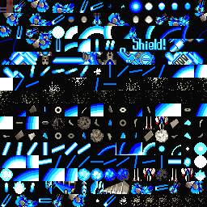
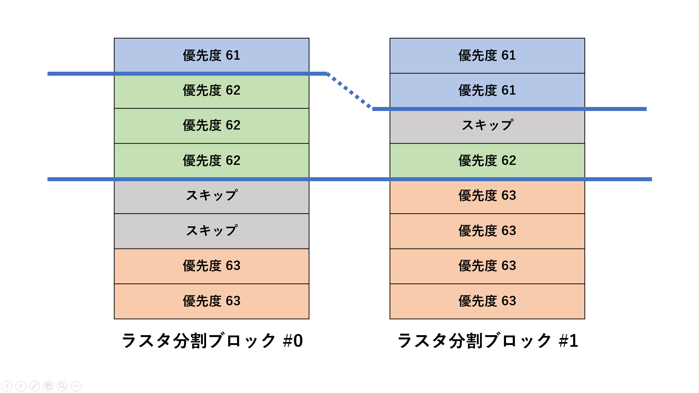

X68000 対応スプライト管理システムの実装
English version is here (translate by google).X68000 は、1987 年 3 月に SHARP から発売されたホビーパソコンです。 この文書では、X68000 上でのスプライト管理システムの実装についてまとめます。
目次
- 夢のマシン X68000 !!!!
- しかし 90年代、すでに X68000 に陳腐化の兆しが…
- スプライト表示数上限をソフトウェアの力で（無理やり）拡張する
- パターン定義数上限をソフトウェアの力で拡張する
- スプライト表示優先度管理機能も必要
- 実装結果
夢のマシン X68000 !!!!
X68000 は、 当時のアーケードゲーム愛好家に取って夢のマシンでした。- 至上初のグラディウス（ほぼ）完全移植達成
-
当時、アーケード版グラディウス（1985年 コナミ）の移植再現度は、
現在でいうベンチマークテストのような意味合いがあり、
ハードウェアの性能指標になっていました。
そのような中で、
X68000 版のグラディウスは、
ほぼアーケード版そのままという高い移植度を達成し、
当時のアーケードゲーム愛好家に衝撃を与えました。
X68000 版のグラディウス（1987 年 SHARP SPS）。
ソフト単体での販売ではなく、本体に同梱されていた。
アーケードゲーム完璧移植の元祖。
開発者自ら「1 ドットの違いも無い」とアピールしたと言われている。
動画は、その移植水準にも満足しなかったユーザーによるパッチ（GRAD_KAI.LZH by THEMINK. 1988/08/26）適用版。
- 強力なスプライト機能を搭載
-
X68000 には、強力なスプライト機能が搭載されていました。
スプライト機能とは、16x16 ドットなどのサイズのキャラクタを表示するためのハードウェア機能です。
（2021 年）現在の GPU が描画するようなものとは違って、
表示サイズは固定で、
拡大・縮小・回転などの変形はサポートされていません。
当時、日本のパソコンでスプライト機能を搭載する機種は少数派で、 その中でもアーケードゲームと同水準のスプライト機能を持つ機種は、 X68000 以外には存在しませんでした。 X68000 版グラディウスの高品質な移植は、強力なスプライト機能無くしては実現不可能でした。
- X68000 のスプライト機能はぶっちぎりに高性能だった
-
X68000 のスプライト機能を、他機種と比較してみます。
ファミコン MSX X68000 表示数 64 枚 32 枚 128 枚 横表示数限界 8 枚 4 枚 32 枚 サイズ 8 x 16 dot
もしくは 8 x 8 dot16 x 16 dot
もしくは 8 x 8 dot16 x 16 dot 色数 3 色 + 透過色 1 色 + 透過色 15 色 + 透過色 パレット数 4 なし 16 パターン定義数 256 64
8 x 8 dot の場合は 256256
比較結果からも明らかなとおり、 X68000 のスプライト機能が突出しています。 その分、価格もぶっちぎりで高かったのですが（他機種比の 10 倍超）、 当時は価格に見合う性能というのが一般的な認識でした。
しかし 90年代、すでに X68000 に陳腐化の兆しが…
X68000 のリリース後、 PC-Engine（1987 年 10 月）、 メガドライブ（1988 年 10 月）、 スーパーファミコン（1990 年 11 月） と言った高性能な家庭用ゲーム機が次々投入されてくると、 X68000 の最大の売りとも言えたスプライト機能の貧弱さが顕著になって来ました。- 128 枚って多いと思ったけどそうでもないよね…
-
X68000 は、1 画面中に 128 枚のスプライトを表示可能でした。
初代グラディウスを移植する上では、
128 枚のスプライトが表示できることは十分なスペックでしたが、
次第に見劣りし始めます。
128 枚のスプライトを表示している様子。
これが X68000 の限界。
1990 年代に入ると、 ゲームハードの性能指標として、 いかに巨大なキャラクタを表示できるか？が問われるようになってきました。 巨大なキャラクタは「デカキャラ」と呼ばれ、もてはやされていました。
X68000 のスプライト機能は、 表示数ではどの家庭用ゲーム機よりも依然突出していたのですが、 表示サイズが 16x16 dot しかサポートされていないことが問題でした。 X68000 上で大きなキャラクタを表示するには、 沢山のスプライトを結合する必要があり、 スプライト数不足に拍車をかけていました。
- パターン定義数 256 ってのも結構狭い…
-
スプライトの表示に使う絵を、スプライトパターンと呼びます。
X68000 のスプライトパターン定義領域（絵を格納するメモリ領域）は、
16x16 dot の絵が 256 枚定義できる広さでした。

X68000 のスプライトパターン定義領域の全体図。
今で言うテクスチャ領域。256x256 dot 分しかない。
これが X68000 の限界。
X68000 のスプライトパターン定義領域が狭いのは、 それが RAM 上に載っていたためです。 同世代のアーケードゲームや家庭用ゲーム機では、 スプライトパターンは安価な ROM 上に載っており、 容量にかなり余裕がありました。 安価なゲーム機であった初代ファミコンでさえも、 後期のソフトではメモリバンクを切り替えることで、 スプライトパターン定義数を大幅に拡張していました。 それらと比較すると、X68000 は見劣りするようになってきました。
- ハード設計時、コスト削減のためスプライト表示数が半分に減らされていた（推測）
-
X68000 のディスプレイは、31KHz モードと呼ばれる高解像度表示が可能でした。
X68000 のスプライト機能で使われた SRAM は、この高解像度表示に耐える高速なタイプで、
当時はとても高価な物だったそうです。
X68000 の製造元である SHARP は、
コスト削減のためやむを得ず、
スプライト表示数を半分に減らして、
SRAM 容量を減らしたと言われています。
X68000 のスプライト表示位置を設定するレジスタ。 （Inside X68000 より）
スプライト 128 番から 255 番に相当する $EB0400 ～ $EB07FF には、
巨大なバッテンが書かれており、実メモリが存在しない。
もしくは、スプライト表示数を将来拡張する想定で、領域のみ確保していたとも言えます。 しかし残念ながら、後発の機種（X68000 XVI や X68030）でスプライト表示数が 256 枚に拡張されることはありませんでした。
X68000 シリーズは、後継機でも一貫して初期の仕様を引継いでいました。 SHARP は、ハードウェアの性能を向上させることよりも、 ソフトウェアの互換性を高めることを優先したと推測されます。 スプライト表示数が拡張されなかったことは残念ですが、 ハードウェア互換を維持する方針は、 結果的に X68000 上で沢山のソフトウェア資産が蓄積されることに繋がっており、 SHARP の判断は正しかったと考えられます。
ちなみに余談ですが、この半減させられた SRAM ですが、自力で増設したらどうなるのでしょうか？ X68K界隈の都市伝説によると、増設して見た結果、スプライト表示数が 256 枚に拡張されることはなかったそうです。
スプライト表示数上限をソフトウェアの力で（無理やり）拡張する
スプライトが 128 枚しか出せないなら、増やせば良いじゃないか、ソフトウェアの力で！ ということで、当時のプログラマたちは、この問題を解決する手法を開発しました。- スプライトダブラーと呼ばれる手法
-
当時のディスプレイはブラウン管を使っており、
表示面の蛍光体に電子ビームを照射して発光させることでモノを表示します。
この電子ビームが通過する横 1 ラインを走査線（ラスター）と呼びます。
走査線が過ぎ去った位置のスプライトは、すでにディスプレイ上に表示されているので、 移動してもそのフレーム中は消されることはありません。 そして、 すでに表示が済んだスプライトを走査線より下に持ってくることで、 再度走査線を通過させ表示する事が可能です。 このような手法を、スプライトダブラーと呼びます。
走査線が過ぎ去った位置のスプライト #0 #1 は、
ディスプレイに表示済みである。

走査線が過ぎ去った位置のスプライト #0 #1 を、
走査線より下に移動する。
スプライト #0 #1 の上を再び走査線が通過し、
再度表示される。
- スプライトダブラー採用事例
-
X68000 上でスプライトダブラーを早くから利用していたタイトルとして、コナミの A-JAX があります。
このほか、電波新聞社によるキャメルトライの移植版では、
回転する背景をすべてスプライトで表示するためスプライトダブラーを利用していました。
スプライトダブラーは、X68000 以外でも広く利用されました。 海外のホビーパソコンである Amiga では、 横幅 16 dot、縦幅無制限のスプライトが、 3 色スプライトの場合で 8 個、15 色スプライトの場合で 4 個表示可能でした。 X68000 に比べるととても貧弱ですが、 ラスターのタイミングに合わせた緻密なコントロールが可能で、 スプライトダブラーのようなことを、1 走査線上で水平方向にも適用でき、 実質無制限に表示数を増殖できたそうです（ただし、タイリング配置しかできないので用途は限定された）。
パターン定義数上限をソフトウェアの力で拡張する
スプライトパターン定義数上限についても、 ソフトウェアの力で拡張できます。 ただし、スプライトダブラーのような特殊なテクニックは用いず、 地道に狭い領域で効率良くやりくりすることで、 パターン定義数上限を克服します。- スプライトパターン定義領域は、キャッシュ領域だと考える
-
X68000 のスプライトパターン定義領域は 256 枚分しかありませんが、
これを 256 枚分のキャッシュ領域とみなせば、
十分な広さがあると言えなくもありません。
これから表示したいスプライトのパターンが、 すでにスプライトパターン定義領域に転送されているなら、 キャッシュヒットとみなします。 転送されていないか消失しているならキャッシュミスとみなし、 新たに未使用のスプライトパターン定義領域を見つけ、 スプライトパターンの転送を行います。 転送したスプライトパターンは、 後で再利用されることを見越して、 なるべく長く残すようにします。
- 走査線の位置を考慮しながらスプライトパターン転送を行う
-
スプライトパターン転送を行う際は、
走査線が現在どのあたりにいるのかを考慮する必要があります。
走査線が画面外にいる期間を、VBLANK 期間と呼びます。 VBLANK 期間中であれば、スプライトパターン定義領域の書き換えを行っても、 現在表示中の絵に影響は出ません。 VBLANK 期間外で書き換えを行うと、書き換え中の絵が見えたり、様々な問題が起きます。
単純に考えると、VBLANK 期間中に書き換えが出来るならベストに思えますが、 VBLANK 期間は短いため、安全に書き換えられるパターン数には制限があります。 従って、VBLANK 期間外の書き換えにも対応する必要があります。
スプライト表示優先度管理機能も必要
- スプライト番号による表示優先度管理は難しい
-
スプライトには元々、表示優先度の概念があり、
若い番号のスプライトの方が手前に表示される仕組みになっています。
しかし実際にゲームを作ってみると、 表示物の優先度ごとにスプライト番号を固定する方法では、管理が非常に難しいです。 例えば、表示物 A が スプライト 0 番、 表示物 B が スプライト 1 番としている時に、 A と B の間に新たに表示物 C を割り込ませたいとしたら、どうなるでしょうか？ スプライト番号の仕切り直しが必要になってしまいます。
- スプライト番号とは独立した「表示優先度」を導入
-
先に示したとおり、スプライト番号を明示的に扱うことによる表示優先度管理は困難です。
スプライト番号とは独立した「表示優先度」という概念を用意し、
それを元に毎フレーム動的にスプライト番号を決定する仕組みが必要です。
- 高速なソートアルゴリズムが必要
-
このことはつまり、
スプライト表示管理には、表示優先度によるソート処理が必要であることを意味します。
そして、このソート処理は毎フレーム実行されることになるので、
処理負荷最小化のため、限界まで最適化した実装が求められます。
スプライト表示優先度管理の戦略は大きく 2 つに分けられます。-
速度を優先したスタイル。
あらかじめ表示物同士を優先度順でリンク構造化。実行時にソートしない。
-
柔軟性を優先したスタイル。
すべて実行時にソートする。
-
速度を優先したスタイル。
あらかじめ表示物同士を優先度順でリンク構造化。実行時にソートしない。
実装結果
ここでは、実装例として、私が当時作成したスプライト管理システムである XSP をご紹介します。- スプライト管理システム XSP
-
XSP は、
ここまでで説明してきたような機能を実装した、
X68000 向けのスプライト管理システムです。
1994 年から 1997 年にかけて作成されました。
現在は、github 上で公開しています。
github : x68k_xsp
XSP は、ここまでで解説してきた以外にも様々な機能を搭載しています。 詳しくは ドキュメント をご参照ください。 （当時の X68000 専門誌である Oh!X に同名のライブラリが掲載されていましたが、それとは別物です。 偶然名前がかぶってしまっただけで、一切関係ありません。）
- ハードウェア上限の 4 倍の表示数、パターン定義数（ほぼ）無制限を達成
-
スプライト表示数をハードウェア上限の 4 倍である 512 枚に、
スプライトパターン定義数をハードウェア上限の 128 倍である 32768 枚に拡張しました。
最大 512 枚のスプライトを表示している様子。
X68000 の限界の 4 倍を達成。
- 512 枚 = スプライト欠け無しで表示できる理論上の最大数
-
X68000 のスプライトは、横に 32 枚以上並べると、
横方向の表示数限界により 33 枚目以降は消えてしまいます。
この表示数限界に引っかからないようにスプライトを配置出来る上限数は、
縦解像度が 256 ドットの場合、1 画面中に 512 枚となります。
この 512 枚という数字は、 スプライト欠けを発生させることなく表示可能な、理論上の最大値となります。 スプライトダブラーは理論上はいくらでもスプライト数を増やせますが、 この理由から 512 枚以上に拡張することにあまりメリットはありません。 512 枚という数字は、横表示数限界から導かれる X68000 のスプライト表示数限界であり、 ここまでやっておけば十分だろうという達成基準になります。
- XSP のスプライトダブラー
-
XSP のスプライトダブラーは、
128 枚のスプライトを 偶数番 奇数番 の 64 枚セットの 2 グループに分け、
片方のセットを表示している期間中にもう一方のセットを書き換えることを、
交互に 8 回繰り返すことで 64 x 8 = 512 枚を表示する仕組みです。
画面は 8 個の領域に分けられていて、
それぞれをラスター分割ブロックと呼びます。
XSP のラスター分割ブロック。
画面を 8 個の領域に分割している。
ラスター分割の位置をどこに設定するかが重要です。 もしこれが固定だと、スプライトが集中したあたりのブロックで 64 枚を超過してしまい、 スプライト表示欠けが発生します。 XSP は、このような問題を避けるため、 各分割ブロックのスプライト数がなるべく均等になるように、 ラスター分割位置を動的に変化させる仕組みを搭載しています。
- ラスター分割境界上での表示優先度破綻を軽減
-
ラスター分割ブロック上では、
スプライトの表示優先度破綻が発生します。
この問題を避けるため、
XSP はラスター分割ブロック内のスプライト番号を可能なかぎり調整することで、
表示優先度破綻を軽減する処理を行います。
（若干のオーバーヘッドを伴う処理なので、この処理はユーザーの指定で on/off 切り替え可能としている。）
優先度破綻軽減処理を step by step で説明します。 ここで示す図は、隣接するラスター分割ブロックを示します。 説明の都合、ラスター分割ブロックは 2 つしかなく、各ブロックに登録できるスプライトの最大数は 8 としています（実際はブロック数は 8 で、各ブロックに 64 枚登録出来る）。
スプライトの優先度ソートは完了しているものとします。 優先度は、大きい方が手前に表示されるものとします。 まず、優先度の高いスプライトから順に、それぞれの分割ブロックにスプライトを登録していきます。
優先度破綻軽減処理 1of3
ソート済みスプライトを登録した状態。
このまま表示すると、 図中の優先度 62 と 63 に割り当てられるスプライト番号が被っているため、 ラスタ分割ブロックの境界線上で優先度破綻が起きます。 これを解消するため、優先度破綻が起きる可能性のあるスプライトを使わないようにスキップします。
優先度破綻軽減処理 2of3
ブロック（#0）のスプライトをスキップした。
同様に、図中の優先度 61 と 62 の間で起きる優先度破綻を解消するため、 破綻が起きる可能性のあるスプライトを使わないようにスキップします。 しかし、スキップするための十分なスプライト数が足りません。 可能な限りスキップします。

優先度破綻軽減処理 3of3
ブロック（#1）のスプライトをスキップした。
スプライトの空きが足りず、1 個しかスキップできなかった。
この例では、破綻を完全に解消することはできませんでしたが、 当初の状態よりは改善されています。 このように、優先度破綻が解消しきれずに残ったとしても、 破綻は常に表示優先度の低い側のスプライトで発生するので、 他のスプライトに遮蔽されるなどして、 破綻が顕在化する確率は低く抑えられます。
- スプライト表示優先度管理と高速化
-
XSP のスプライト表示優先度管理は、
すべてのスプライト表示リクエストを、
実行時にソートするスタイルを採用しています（前述の (2) 柔軟性重視＋高速化に相当）。
XSP の表示優先度ソートアルゴリズムは、分布数えソートです。 XSP が扱う表示優先度は段階数が有限であるため、 各優先度毎のスプライト表示リクエスト登録数を事前カウントすることで、 ソート後の要素位置を簡単に知ることが出来ます。 ただし、実際の実装は非常に複雑です。 高速化のため、 ループ内処理で CPU レジスタの退避・復活が頻発しないよう処理粒度を調節しているため、 ソートの一連の処理はバラバラに分解されて他の無関係なループ処理中に埋め込まれており、 各所に点在したような状態になっています。
また、スプライト表示リクエストは、 同一表示優先度のものが連続する傾向が高いので、 これに着目した高速化を行っています。 さらに、 スプライト表示リクエスト上の表示優先度切り替えポイントを、 ループ処理の終端も兼ねる実装にすることで、 ループ終了判定チェックをループの外に出す高速化を行っています。 以下は、これを踏まえたループ処理の疑似コードで、 XSP 内部の至る所で出現します。for (;;) { ループ内処理; 次の表示リクエストの優先度キー取得; if (優先度キー変更なし) continue; /* 高確率で分岐 */ if (endmark) break; 優先度変更処理; continue; }
2021/02/25 初出
文責： よっしん
[戻る]